Комплексный сеанс
До четырёх техник за 90 минут: висцеральная, миофасциальная, медовая, баночная
Услуги и цены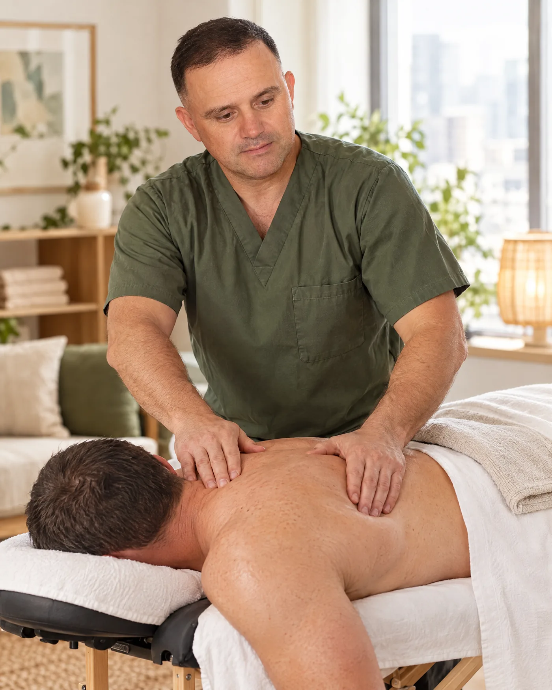
Тело работает целиком.
Восстановление — это путь.
Результат держится.
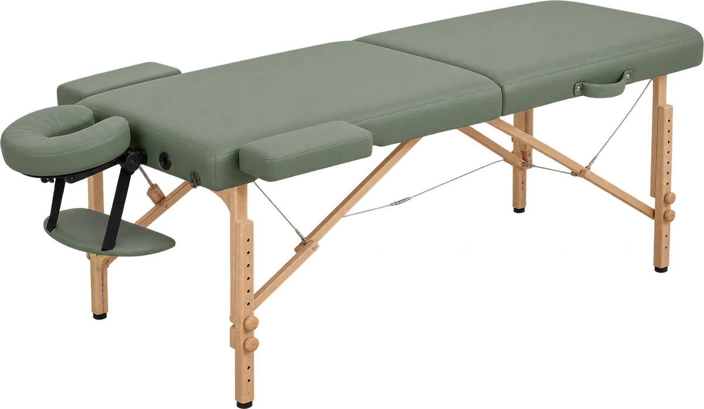
Выезд на домКраснодар
До четырёх техник за 90 минут: висцеральная, миофасциальная, медовая, баночная
Услуги и цены
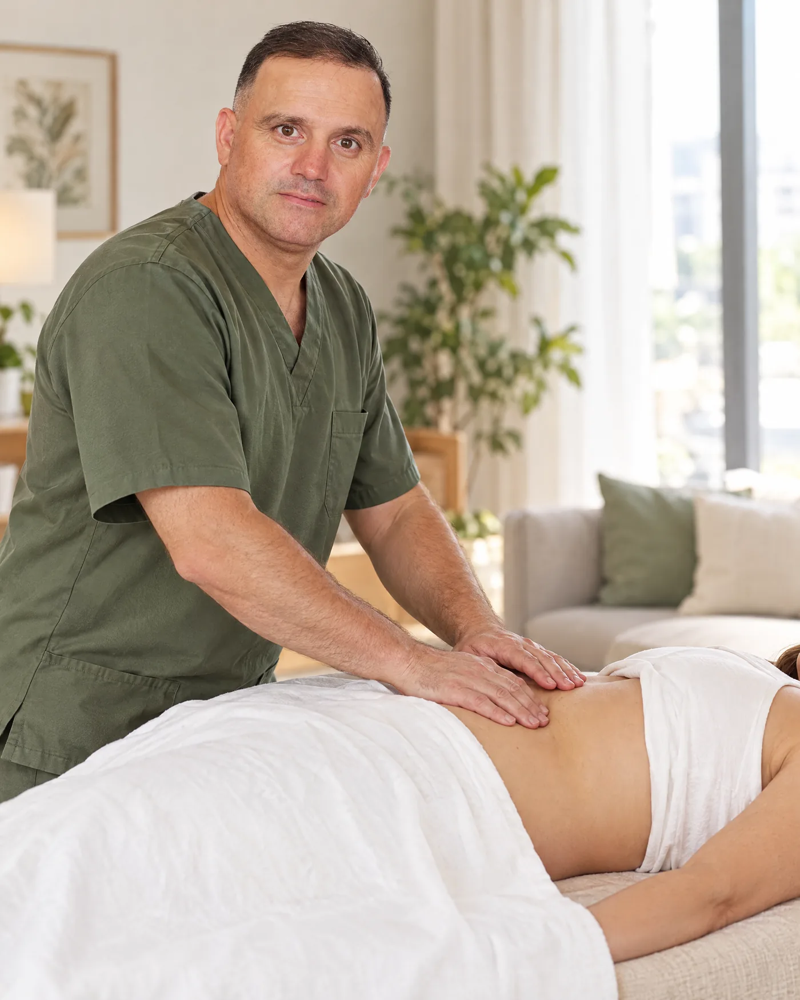
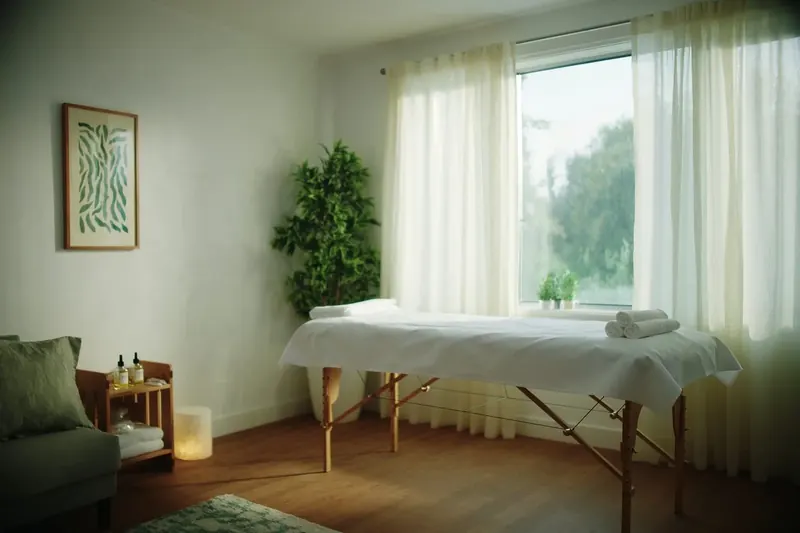
Массаж, питание и очищение в одном плане, от первой встречи до результата
О курсеСначала обсуждаем ваши жалобы, ощущения и цели. Затем подбираю техники и работаю с мышечным напряжением, фасциями и подвижностью.
Моя задача не провести сеанс по шаблону, а подобрать работу под конкретного человека. Поэтому веду каждого сам, от первого сообщения до последней встречи.
Как устроен курс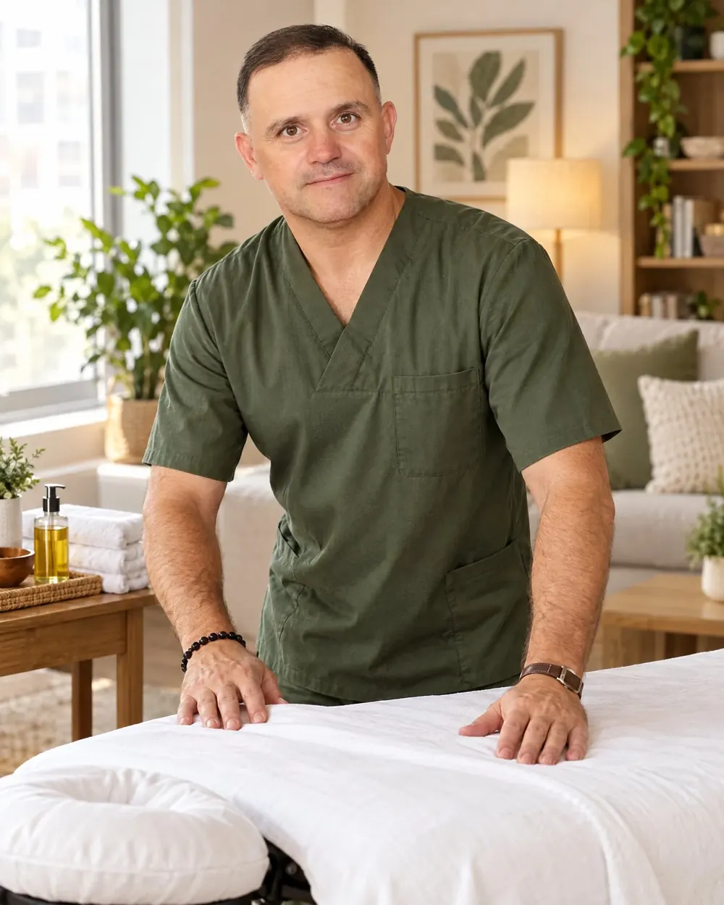
Работал в Турции, Грузии, Казахстане, Киргизии и Москве. Миофасциальной технике учился в Израиле.
Сначала слушаю, потом работаю. Объясняю, что делаю, и даю советы для дома.
Работаю у вас дома, в удобное время. После сеанса никуда не нужно ехать.
54 отзыва за год, паспорт проверен. Многие клиенты продолжают курс.
Открыть профиль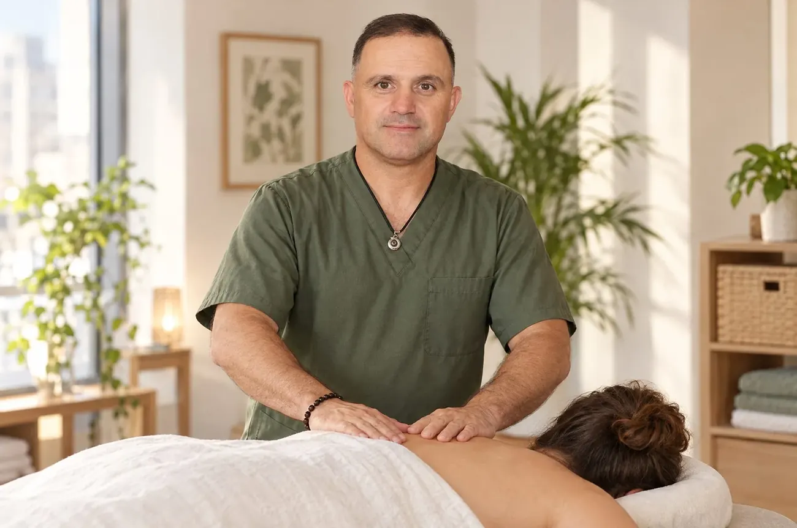
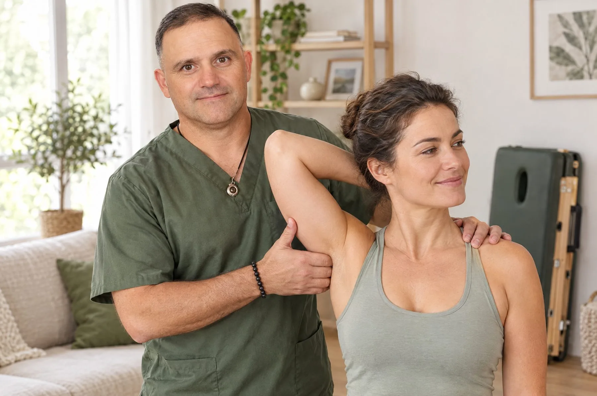
Черновик: этапы подтверждает ДенисЧисло встреч, срок и стоимость курса зависят от человека и обсуждаются на знакомстве.
Цены предварительные, уточняются до записи
До четырёх техник за один сеанс: висцеральная, миофасциальная, медовая, баночная. Что именно войдёт, решаем вместе.
90 минутот 6 000 ₽
Записаться60 мин · от 4 000 ₽
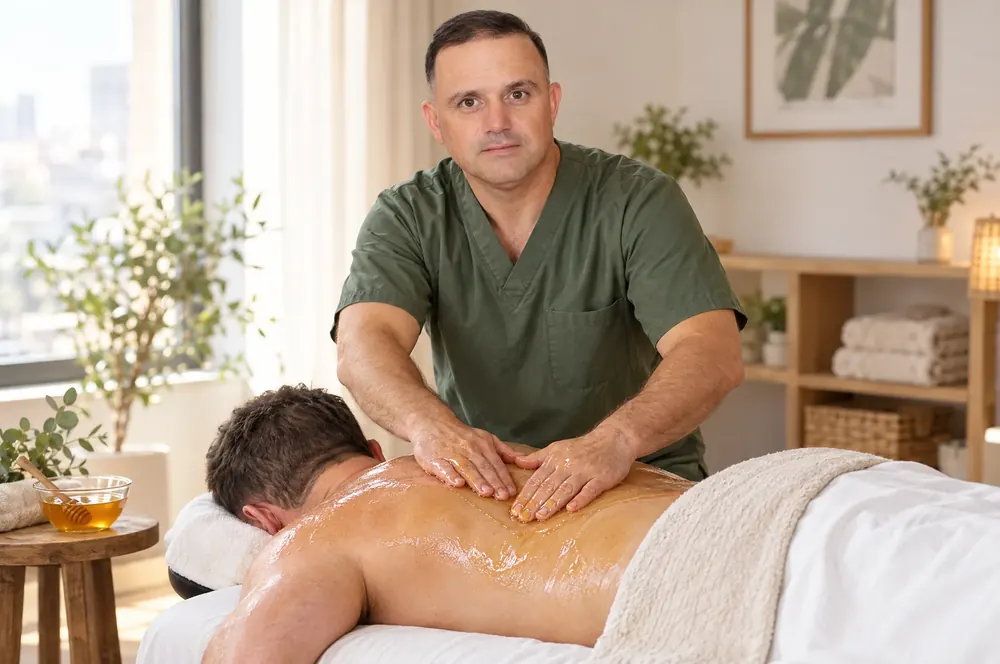
60 мин · от 4 000 ₽
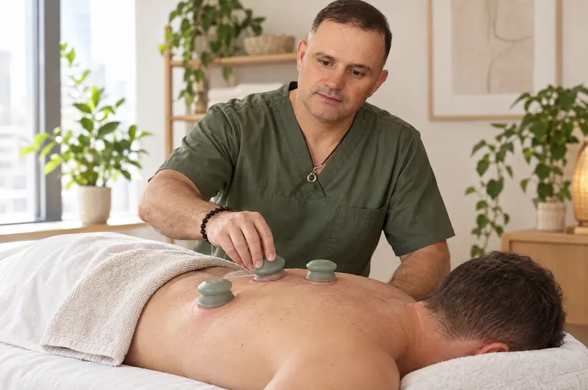
60 мин · от 4 000 ₽
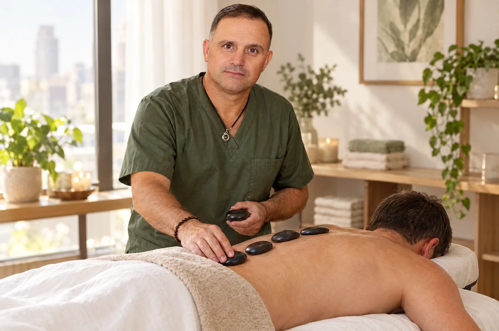
60 мин · от 4 000 ₽
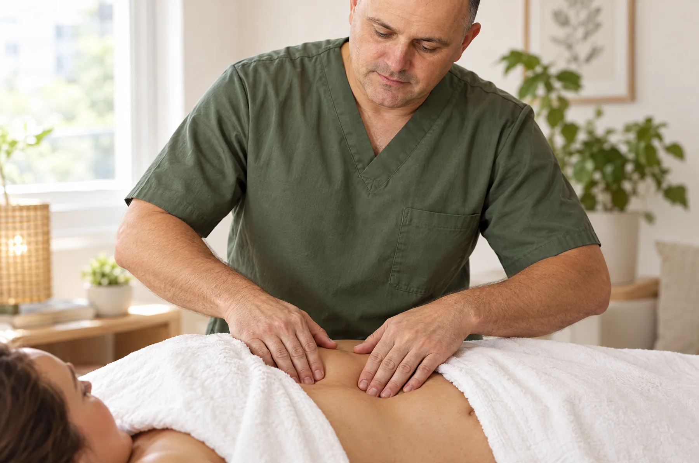
цена по согласованию
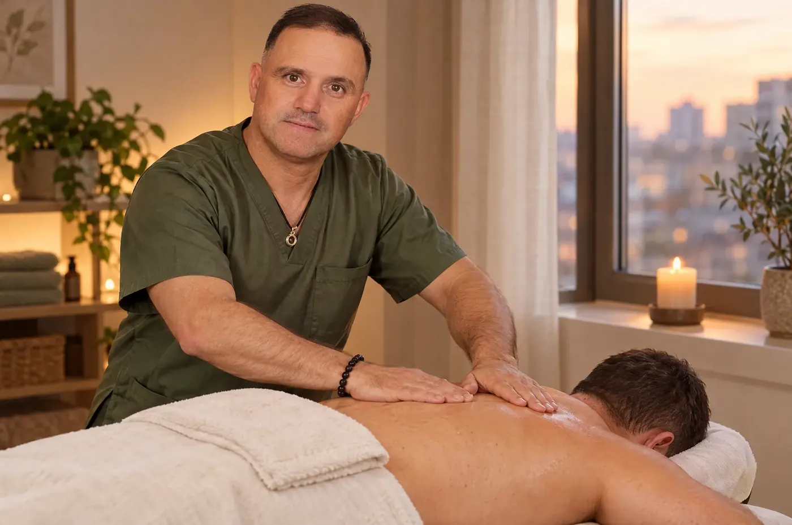
60 мин · от 4 000 ₽
Лимфодренажный, антицеллюлитный, детский массаж, работа с триггерными точками. Длительность и цену согласуем заранее.
Мягкая работа руками через живот: с органами брюшной полости и связками вокруг них. Медленно, без резких движений.
Мёд наносится на кожу, ладони прилипают и отрываются. Кожа заметно разогревается, остатки мёда смываются.
Силиконовые банки ставятся на спину и двигаются по маслу. После сеанса остаются пятна, они сходят за несколько дней.
Миофасциальная техника, триггерные точки, спортивный массаж: спина, шея, плечи, ноги.
Разбираем, как вы едите сейчас и что мешает животу работать. Рекомендации, а не жёсткая диета.
Антипаразитарная часть курса. Нужна не всем, обсуждаем после разговора о здоровье. При хронических заболеваниях сначала к врачу.
Четыре шага: от первого сообщения до советов на дом
В Telegram, WhatsApp или звоните. Рассказываете, что беспокоит.
Формат, длительность, стоимость и время. Отвечаю сам.
В согласованное время, со всем оборудованием. Раскладываю стол, застилаю, начинаем.
Работаем, проверяем ощущения, даю рекомендации для дома.
Заранее, в Telegram или WhatsApp. Время и адрес согласуем в переписке, отвечаю сам.
Сеанс 60 или 90 минут. Курс идёт по плану, который составляем на знакомстве.
ЗаполнитьДни и часы, когда Денис принимает заявки и выезжает.
ЗаполнитьНужна ли предоплата, её размер и возвращается ли при отмене.
ЗаполнитьЗа сколько часов можно перенести сеанс без потери оплаты.
ЗаполнитьНаличные или перевод, до сеанса или после.
ЗаполнитьВозможен ли выезд в день обращения и есть ли доплата.
Проверьте список ниже. При хронических заболеваниях сначала посоветуйтесь с врачом.
Спортивный массажИменно то, что мне было нужно. С задачей Денис справился на 100%, нашли спазмы и триггеры.
Массаж поясницыТребовался именно миофасциальный массаж. Нашёл много очагов боли. После первого же сеанса подвижность и гибкость стала возвращаться. Боль стихла. Буду продолжать курс массажа до полного восстановления.
Массаж при сколиозеПриезжал к нам домой, делал массаж мне, дочке и сыну. Всем очень понравилось. Работает профессионально, аккуратно и внимательно. После массажа прекрасное самочувствие и расслабление.
Лечебно-оздоровительныйОчень понравился массаж, сегодня был первый раз, уже даже после первого сеанса гораздо легче! Обязательно продолжу курс.
Массаж спиныВовремя. Со своим столом и принадлежностями. Внимательно выслушал и был аккуратен. Но самое главное это массаж: щёлкались мышцы, перестала болеть спина за один приём.
Массаж шеиМеня долго мучали боли в шее и спине. Денис за один сеанс снял напряжение, появилась лёгкость, которой давно уже не было. Планирую продолжать курс.
Массаж спиныЯ очень давний и опытный «пользователь» массажей, много видел разных массажистов. Могу сказать, что этот парень знает, что делает, и делает всё профессионально.
Массаж поясницыВнезапно утром возникла боль в пояснице. Денис оперативно приехал, сделал массаж, а вечером я уже смог играть на соревнованиях по баскетболу. Сейчас уже примерно десятый сеанс: выправилась спина, ушли боли в спине, плечах, шее и пояснице.
Спортивный массажОтличный спортивный массаж. Все мышцы за час успел проработать, завтра пойду на тренировку с полными силами.
Массаж шеи и зоны декольтеПромял спину и шею так, как никто до этого не проминал. У меня даже плечи расправились после массажа. Очень вежливый и тактичный.
Массаж при остеохондрозеЯ мама в декрете с малышом, спина отваливается. Мастер приехал по первому зову. Массаж делал плотный, основательный, мышцы наконец-то расслабились. Очень выручил.
Массаж спиныОчень внимательный к пациенту специалист. Больше дела, меньше слов. Проработал те зоны, которые обычно никто не отрабатывал. Однозначно на очень высоком уровне!
Массаж при остеохондрозеПриехал быстро, стол и всё необходимое с собой, классные горячие камни из базальта: я попросила, он привёз. Отличные крепкие, цепкие руки.
Массаж спиныОчень внимательный и знающий своё дело специалист. Мама очень довольна! Аккуратный, внимательный к пожеланиям, приятный в общении. Объясняет, отвечает на вопросы. Выкладывается по полной.
Лечебно-оздоровительныйМассаж у Дениса это искусство! Чутко ловит все напряжённые зоны на теле, расслабляя их. Благодаря большому опыту идеально подобрана техника расслабления и проработки напряжённых мышц.
Массаж спиныОткликнулся сразу и приехал в этот же день. Вежливый, пунктуальный. Массаж на высшем уровне. Не отказался сразу второму человеку сделать массаж.
Массаж не является медицинской услугой и не заменяет лечение. При хронических заболеваниях посоветуйтесь с врачом.
Можно выбрать локальную работу с шейно-воротниковой зоной. Комплексный массаж и курс не обязательны.
Не обязательно. Висцеральная, миофасциальная, медовая и баночная техники подбираются по ситуации, с учётом противопоказаний и ваших пожеланий.
У всех по-разному. Количество встреч и срок обсуждаем на знакомстве, когда понятны жалобы и цели.
Глубокая работа ощущается как давление, иногда непривычное. Резкой боли быть не должно: интенсивность подбираю под вас и спрашиваю по ходу сеанса.
Свободное место для массажного стола. Остальное привожу сам.
Расскажите, что беспокоит или какой массаж нужен. Согласуем формат, длительность, стоимость и удобное время. Отвечаю сам.